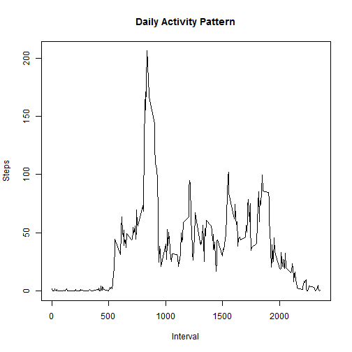

The data is stored in a zipped CSV file, we'll load it in to the "data" variable. We'll then transform the data into a data.table for easier use.
library(data.table)
## data.table 1.9.4 For help type: ?data.table
## *** NB: by=.EACHI is now explicit. See README to restore previous behaviour.
##
## Attaching package: 'data.table'
##
## The following objects are masked from 'package:lubridate':
##
## hour, mday, month, quarter, wday, week, yday, year
originaldata <- data.table(read.csv(unz("activity.zip", "activity.csv")))
Exclude all of the rows that have NA for the steps column
data <- originaldata[!is.na(originaldata$steps), ]
data <- originaldata
Transform the data into daily totals by summing up the number of steps by day, using the aggregate function.
dailySteps <- aggregate(steps ~ date, data, sum)
Create a histogram out of the total number of steps taken in a day.
hist(dailySteps$steps, xlab = "Daily Steps", main = "Steps taken in a day")
Take the results and calculate the mean and median of the "steps" variable.
mean(dailySteps$steps)
## [1] 10766.19
median(dailySteps$steps)
## [1] 10765
Transform the data into average steps taken in each five minute interval, using the mean.
intervalSteps <- aggregate(steps ~ interval, data, mean)
Create a time series plot.
plot(x = intervalSteps$interval, y = intervalSteps$steps, type = "l", xlab = "Interval", ylab = "Steps", main = "Daily Activity Pattern")

Use the max function to pull out the 5 minute interval that has the highest average number of steps.
intervalSteps$interval[intervalSteps$steps == max(intervalSteps$steps)]
## [1] 835
Calculate the total number of rows with missing values.
sum(is.na(originaldata))
## [1] 2304
Fill in the NA data with the average values
cleanedData <- originaldata
cleanedData$steps[is.na(cleanedData$steps)] <- mean(originaldata$steps)
Pull out the daily steps by summing up the number of steps by day, using the aggregate function.
dailySteps <- aggregate(steps ~ date, cleanedData, sum)
Create a histogram out of the total number of steps taken in a day.
hist(dailySteps$steps, xlab = "Daily Steps", main = "Steps taken in a day")

Take the results and calculate the mean and median of the "steps" variable.
mean(dailySteps$steps)
## [1] 10766.19
median(dailySteps$steps)
## [1] 10765
The histogram, mean, and median values did not change at all by imputting the missing values. This is because the imputted values were calculated by using the mean function.
Create a new variable for tracking if the day is a weekday or a weekend. Us the lubridate package to help out.
library(lubridate)
cleanedData$isWeekend <- weekdays(ymd(cleanedData$date)) %in% c("Saturday", "Sunday")
Convert the data to intervals.
intervalStepsWeekday <- aggregate(steps ~ interval, cleanedData[cleanedData$isWeekend == F, ], mean)
intervalStepsWeekday$weekendSegment = "Weekday"
intervalStepsWeekend <- aggregate(steps ~ interval, cleanedData[cleanedData$isWeekend == T, ], mean)
intervalStepsWeekend$weekendSegment = "Weekend"
intervalStepsFaceted = rbind(intervalStepsWeekend, intervalStepsWeekday)
Create the plots to compare the data
library(ggplot2)
g <- ggplot(intervalStepsFaceted, aes(interval, steps))
g + geom_line() + facet_wrap(~ weekendSegment, nrow = 2) + labs(x = "Interval") + labs(y = "Number of steps")